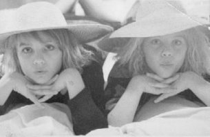

Mother's Memories:
After moving our family of six from Southern California to Ashland, we were unable to find a home to rent for a couple of months and had to live out of our camper. Finally a home became available and we moved in. After moving all day, Dad and I sat exhausted before the fire when I suddenly felt sick to my stomach and ran for the bathroom. To my horror, I didn't make it, but Dad kindly clean up the mess. That was when I first realized I was expecting Tiana. We were so happy to be having another baby, even though our health insurance wasn�t yet in effect. We only lived in our rental home for a few months before it was sold. We moved into another rental home that Grandma Anna owned. The house had a pool, was close to Grandma and Grandpa Cluff and across the street from my old elementary school, Bellview. But the accommodations were only temporary and we were soon faced with moving again. We looked for property to build a home on and found some nearby that belonged to my Uncle Ray. When we asked if we could buy the land, he said that he had a house he wanted to sell instead. When Dennis saw the land the house was on he wanted to buy it immediately. The location was good, as a creek ran on it, but I didn't want the house because it was too small for the family, plus the land was cluttered with junk, an old barn and other eye sores. Dennis begged and pleaded to get me to say yes to the small house, instead of building a dream home. To sweeten the deal he that said I could be in charge of decorating the home any way I wanted if we could just buy the property. I agreed and before we moved in I had the living room painted magenta, had red and purple carpet put in, bought hot pink and purple furniture, put modern art on all the walls and finished it off with lots of jungle plants. The whole kitchen was wallpapered, cabinets and all, in magenta flowers. Uncle Randy painted our hall in the rainbow colors I chose and warned me to not work so hard as I was 7 months pregnant. My artistic centerpiece was a huge magenta canvas with clothing draped all over it. I also had hinged paintings hanging on the wall that opened up to reveal the television and telephone behind them. The house was so exotic that over a hundred people came to tour it over the years. Now it is all the rage to have interiors like the one I decorated over 29 years ago. I loved how the dark colors didn't show the stains of a big family so the house was always neat looking.
We went on a trip to the Bay Area and were visiting my brother, Randy, in his San Francisco high-rise office when I noticed a name plate on a secretary�s desk that said Tiana. I noticed that Tiana was spelled like Diana and immediately announced that if we had a girl, I wanted to name her Tiana. Later I found out that Tiana is Hawaiian for Diana. Another secretary in the office was named Lila and even though I didn't know that, I picked Lila for Tiana's middle name.
On July 20th, I was washing dishes when my water broke. We had planned a home birth, which turned out better than a hospital birth as it was so relaxing. I liked being able to do as I liked and not have to follow strict rules and be bothered by so many people. I could go on with normal life and was able to to ease my labor by walking around as much as I wanted. I called my sister-in-law Judy and she took my older children for me. Once the midwife and doctor had arrived, Dad blocked off our driveway so we wouldn't be disturbed while I was giving birth. All went well until it was time to push. I pushed for hours without success and finally started to cry. The doctor suggested squatting to have the baby. I had read about it and always wanted to try it. With the first push I had success, with the great help of gravity. Tiana was the cutest little 9lb baby girl. She was the most roly-poly of all our babies so far.
We were so thrilled with her, she was so well behaved, but by her third month I became very sick. All the moving and interior decorating while I was pregnant had taken its toll as my brother Randy had predicted. It felt like a bad flu that kept me in bed for months and months. I kept nursing Tiana for a year, but lost so much weight and was so weak that I sometimes had to crawl to the bathroom. Tiana had to lay in bed with me and learned to walk around my bed. She was a perfect baby. When I felt strong enough, I took her out of our bedroom to look at the world around us. Her eyes went as wide as saucers as she saw something other than our bedroom for the first time.
When Tiana was two years old my sister, Kathleen, died of cancer and I offered to take care of her four children. Now Tiana wasn't the youngest anymore, I had nine children ages 1, 2, 3, 4, 5, 6, 7, 8 and 12 in the house. The family had a fun time together and I was given strength to be on my feet all day and do the work required to care for them. My legs were tired at night, as I didn't have time to sit even for meals. Finally, after about a year, I could feel my health leaving me and soon others had to take Kathleen's children as I was near death. One day I told my husband I was going to die and was in a great deal of pain. My brother Monte was at our home getting milk from our milk cow. He and Dennis gave me a blessing. I stopped breathing during the blessing but finally came back. When the men left the room, I knelt down in prayer to ask what to do. I�d already tried a doctor and wasn't getting any help. In my mind I was told to try a Polish acupressurist, which at that time was like going to a witch doctor. I was so sick that it even hurt to wear my clothes but I travelled to the acupressurist and was cured of a heart problem without an operation. Little Tiana was so good through all of this, she is a special spirit.
Tiana played well with Daisha and use to boss her around a lot but Daisha would let her and took care of her through my many troubles. Growing up Tiana loved art, playing outside, riding her bike, jumping on the trampoline and swimming. She got the best grades of all our children in High School. In fifth grade she was doing five hours of homework each night, which made me mad, as she was too stressed out. She lost weight and her hair started thinning out. I went to her teacher and talked to her, but she yelled at me, which shocked me. I found the teacher would put student�s names on the board and make them stand before the class and miss recess if their homework wasn't done. The principal backed up the teacher�s actions so there was nothing we could say, even though it made Tiana sick. I went to the school board and discovered that it was against California law to hold children in for recess. All this happened in Lake of the Pines, California as we moved there for a year and a half. Her school was highly rated and they had a very hard course for the children to follow because they wanted to stay at the top. When we moved back to Ashland Tiana went back to having school in a normal and relaxing way.
When we were in Lake of the Pines, we went on a ward campout and were the first people to arrive. The children saw a large pond with a huge waterslide and all jumped out of the van and ran towards it before I could say anything. Moments later they came back screaming that Tiana had been hurt on the slide as a group of strangers carried her bloody body to me. Both her front teeth had been broken and she was in shock. She had fallen off the slide. We missed the campout, as we had to make the long drive down to Sacramento to the doctor.
When Tiana was a tiny girl she used to ask, �Mother when I grow up can I have this house?� She loved the house she was born and raised in. She loved the yard and still loves it as she gardens and landscapes it for us to this day. Tiana was always extra strong and loved to play rough and wrestle. She was wrestling a friend once when she broke her little finger, but didn�t even know it was broken until it grew crooked. When Tiana finished High School she decided to be a home economics teacher and enrolled at Rick�s College. While she was there she developed a love for country music, line dancing, horseback riding and cowboys. She took horseback riding lessons and had lots of fun. Rick�s College had a mother�s day each year and I would travel to visit her. After her two years at Rick�s, she transferred to BYU where she spent another two years and got her degree. While at BYU, one day she was riding her bicycle when she was hit by a car, but she walked away with only bruises and soreness. She did well at BYU and we attended a ceremony where she was honored for her grades. Before graduation she was asked to teach at a Middle School in Salt Lake. The school had some problem children but she knew how to take control of the children and help them. After her year of teaching the staff begged her to stay but she didn't want to and went to Park City to teach High School instead. The children in Park City were very well behaved and she loved it.
Tiana's love life was fun. She used to bring young men to our home for hotdog roasts by our creek when she came home in the summer. She fell for a boy who eventually was called on a mission to Russia. We all thought they would marry when he returned from his mission. About a year after he left, Tiana was home for the summer and was asked by her bishop one Sunday to pick up a trucker at a truck stop and bring him to church, as he couldn't bring his semi to church. Tiana thought it would be a nasty, old trucker but she discovered it was a cute, young Wyoming cowboy named Hyrum who had just returned from a mission in Texas. He even spoke with a cowboy drawl. She had found the cowboy she had always dreamed of and quickly forgot about her other man. Hyrum was smitten as well. They kept in constant contact by phone as Hyrum drove his truck all across the US. Tiana and Hyrum were married in the Medford, Oregon Temple after about a year of dating. Then Tiana became a trucker too, driving a big 18-wheeler semi all over the US and parts of Canada. She said being a trucker was harder than being a high school teacher. But she was very good at it and very safe. Tiana is our only child not to have been involved in a car accident so far. Now, after four years of marriage Tiana and Hyrum have quit trucking, moved to the Oregon coast and have had a sweet baby daughter, Talea Lila. But the gypsy is still in their blood and at times they miss their trucking adventures, though not in the winter when storms are raging or tornados are on the loose.
Tiana is the best! She is so faithful in the church and is devoted to being a perfect wife and mother. Tiana does everything with perfection; sewing, crafts, cooking, decorating, haircutting, piano, public speaking, teaching etc� We are so honored to have Tiana for our daughter.